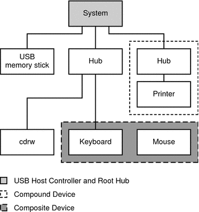
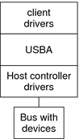

|
||||||||||||||||||||||||||||
|
1. Managing Removable Media (Overview) 2. Managing Removable Media (Tasks) 3. Accessing Removable Media (Tasks) 4. Writing CDs and DVDs (Tasks) 5. Managing Devices (Overview/Tasks) 6. Dynamically Configuring Devices (Tasks) 7. Using USB Devices (Overview) Solaris Support for USB Devices 9. Using InfiniBand Devices (Overview/Tasks) 11. Administering Disks (Tasks) 12. SPARC: Adding a Disk (Tasks) 13. x86: Adding a Disk (Tasks) 14. Configuring Solaris iSCSI Targets and Initiators (Tasks) 15. Configuring and Managing the Solaris Internet Storage Name Service (iSNS) 16. The format Utility (Reference) 17. Managing File Systems (Overview) 18. Creating UFS, TMPFS, and LOFS File Systems (Tasks) 19. Mounting and Unmounting File Systems (Tasks) 20. Using The CacheFS File System (Tasks) 21. Configuring Additional Swap Space (Tasks) 22. Checking UFS File System Consistency (Tasks) 23. UFS File System (Reference) 24. Backing Up and Restoring File Systems (Overview) 25. Backing Up Files and File Systems (Tasks) 26. Using UFS Snapshots (Tasks) 27. Restoring Files and File Systems (Tasks) 28. UFS Backup and Restore Commands (Reference) 29. Copying UFS Files and File Systems (Tasks) |
Overview of USB DevicesUniversal Serial Bus (USB) was developed by the PC industry to provide a low-cost solution for attaching peripheral devices, such as keyboards, mouse devices, and printers, to a system. USB connectors are designed to fit only one type of cable, in one way. The primary design motivation for USB was to alleviate the need for multiple connector types for different devices. This design reduces the clutter on the back panel of a system. Devices connect to USB ports on external USB hubs, or on a root hub that is located on the computer itself. Since hubs have several ports, several branches of a device tree can stem from a hub. For more information, see usba(7D) or go to the following site: Commonly Used USB AcronymsThe following table describes the USB acronyms that are used in the Solaris OS. For a complete description of USB components and acronyms, go to:
USB Bus DescriptionThe USB specification is openly available and free of royalties. The specification defines the electrical and mechanical interfaces of the bus and the connectors. USB employs a topology in which hubs provide attachment points for USB devices. The host controller contains the root hub, which is the origin of all USB ports in the system. For more information about hubs, see USB Host Controller and Hubs. Figure 7-1 USB Physical Device HierarchyFigure 7-1 shows a system with three active USB ports. The first USB port connects a USB memory stick. The second USB port connects an external hub, which in turn, connects a cdrw device and a composite keyboard/mouse device. As a composite device, this keyboard contains a USB controller, which operates both the keyboard and an attached mouse. The keyboard and the mouse share a common USB bus address because they are directed by the same USB controller. Figure 7-1 also shows an example of a hub and a printer as a compound device. The hub is an external hub that is enclosed in the same casing as the printer. The printer is permanently connected to the hub. The hub and printer have separate USB bus addresses. The device tree path name for some of the devices that are displayed in Figure 7-1 are listed here.
USB Devices and DriversUSB devices with similar attributes and services are grouped into device classes. Devices within a class are managed by the same device driver pair. However, the USB specification also allows for vendor-specific devices that are not part of a specific class. The Human Interface Device (HID) class contains devices that are user-controlled such as the following devices:
The Communication Device class includes the following devices:
Other device classes include the following classes:
Each USB device contains descriptors that reflect the class of the device. A device class specifies how its members should behave in configuration and data transfer. You can obtain additional class information from: For more information about USB devices supported in the Solaris release, see usb(7D). USB Driver EnhancementsThe following USB driver enhancements are included.
The EHCI, OHCI, and UHCI DriversFeatures of the EHCI driver include:
Use the prtconf command output to identify whether your system supports USB 1.1 or USB 2.0 devices. For example: # prtconf -D | egrep "ehci|ohci|uhci" If your prtconf output identifies an EHCI controller, your system supports USB 2.0 devices. If your prtconf output identifies an OHCI or UHCI controller, your system supports USB 1.1 devices. Solaris USB Architecture (USBA)USB devices can be represented as two levels of device tree nodes. A device node represents the entire USB device. One or more child interface nodes represent the individual USB interfaces on the device. Driver binding is achieved by using the compatible name properties. For more information, refer to 3.2.2.1 of the IEEE 1275 USB binding and Writing Device Drivers. A driver can either bind to the entire device and control all the interfaces, or can bind to just one interface. If no vendor or class driver claims the entire device, a generic USB multi-interface driver is bound to the device-level node. This driver attempts to bind drivers to each interface by using compatible names properties, as defined in section 3.3.2.1 of the IEEE 1275 binding specification. The Solaris USB Architecture (USBA) adheres to the USB 1.1 and USB 2.0 specifications and is part of the Solaris Device Driver Interface (DDI). The USBA model is similar to Sun Common SCSI Architecture (SCSA). As the following figure shows, the USBA is a thin layer that provides a generic USB transport-layer abstraction to client drivers, providing them with services that implement core generic USB functionality. Figure 7-2 Solaris USB Architecture (USBA) |
|||||||||||||||||||||||||||
|